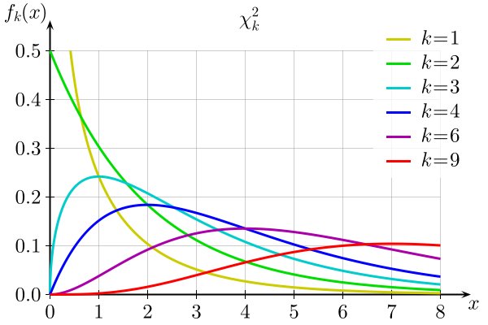
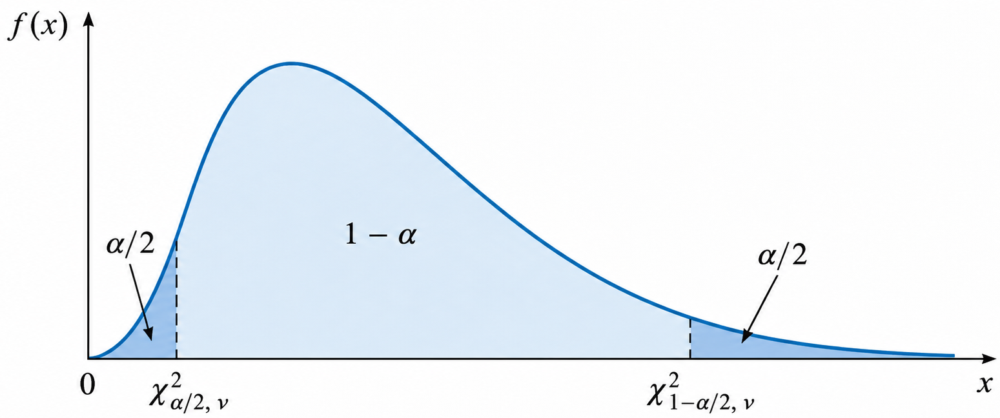

Essa quantidade segue uma distribuição Qui-quadrado com \(n-1\) graus de liberdade.
Distribuição Qui-quadrado (\(\chi^2\))
Não é simétrica: Ela é “torta” para a direita.
Só assume valores positivos: Variância nunca é negativa.
Consequência para o IC: Os valores críticos da tabela não são iguais (\(\pm z\)). Precisamos olhar dois valores distintos: \(\chi^2_{\text{inf}}\) e \(\chi^2_{\text{sup}}\).


Construção do IC para \(\sigma^2\)
Partimos da probabilidade: \[P(\chi^2_{\alpha/2} \le \frac{(n-1)S^2}{\sigma^2} \le \chi^2_{1-\alpha/2}) = 1-\alpha\]
Ao isolar \(\sigma^2\) (invertendo as frações), obtemos:
Note que o valor maior da tabela fica no denominador do limite inferior, e vice-versa.
Fragilidade do IC para \(\sigma^2\)
O método da Qui-quadrado não é robusto. Isso significa que ele é muito sensível à suposição de normalidade.
Diferente da média (onde o TCL ajuda em grandes amostras), para a variância, a curtose (peso das caudas) distorce gravemente a cobertura do intervalo.
Se os dados não forem normais:
O nível de confiança real pode ser muito menor que 95% (o intervalo fica “mentiroso”).
Solução: Utilizamos métodos computacionais de reamostragem, como o Bootstrap.
Regra de Ouro: Só use a fórmula da \(\chi^2\) se o teste de normalidade (ex.: Shapiro-Wilk) e o QQ-Plot confirmarem que os dados são normais.
Exemplo 16.1
Um analista de risco monitorou o retorno diário de uma ação por 20 dias e encontrou uma variância amostral igual a 0,04. Construa um IC de 95% para a variância real \(\sigma^2\).
Exemplo 16.2
Uma farmacêutica precisa garantir que a variabilidade na dosagem de um comprimido seja mínima. Uma amostra de 15 comprimidos revelou uma variância amostral de 4 \(\text{mg}^2\). Supondo que a dosagem segue uma distribuição Normal, construa um IC de 95% para a variância populacional (\(\sigma^2\)).
Parte 2: Intervalo para a Proporção (\(p\))
Agora mudamos o foco de variáveis contínuas (dinheiro, tempo) para variáveis binárias (Sucesso/Fracasso).
Estimador Pontual:\(\widehat{p} = \frac{X}{n}\) (número de sucessos / total).
A distribuição exata é a Binomial, que é complexa para calcular intervalos.
Usamos como solução para grandes amostras o Teorema Central do Limite (TCL).
Justificativa Assintótica
Para \(n\) suficientemente grande, a distribuição de \(\widehat{p}\) se aproxima de uma Normal:
Isolando \(p\), chegamos ao Intervalo de Wald: \[IC(p) = \widehat{p} \pm z_{\alpha/2} \sqrt{\frac{\widehat{p}(1-\widehat{p})}{n}}\]
Validade do IC para \(p\)
O Método de Wald é uma aproximação. Para usá-lo, devemos garantir que a normalidade “pegou”.
Regra Prática: o intervalo é confiável se o número esperado de sucessos e fracassos for pelo menos 5 (alguns autores usam 10):
\(n \cdot \widehat{p} \ge 5\)
\(n \cdot (1-\widehat{p}) \ge 5\)
Caso contrário: Devemos usar métodos “Exatos” (como Clopper-Pearson), que o R calcula automaticamente se pedirmos.
Exemplo 16.3
Em uma pesquisa com 400 consumidores, 160 afirmaram preferir a marca A. Construa um IC de 95% para a proporção real de preferência.
Exemplo 16.4
Uma seguradora deseja estimar a taxa de renovação de sua carteira de automóveis para projetar o fluxo de caixa do próximo ano. Em uma amostra aleatória de 500 apólices que venceram no mês passado, 425 foram renovadas. Construa um IC de 90% para a verdadeira proporção de renovação (\(p\)).
Aplicação no R: VarCI
Para a variância, utilizamos a função VarCI do pacote DescTools.
Você precisa instalar o pacote DescTools apenas uma vez usando o comando install.packages("DescTools")
# Dados do Exemplo 16.2# Supondo que temos os dados coletadosdosagem <-c(53.6, 51.0, 46.1, 51.4, 49.1, 47.9, 49.6, 47.9, 48.5, 48.7,46.6, 51.7, 50.3, 47.7, 52.5)# Cálculo do IC para a VariânciaDescTools::VarCI(dosagem, conf.level =0.95, method ="classic")
var lwr.ci upr.ci
4.806381 2.576265 11.954629
Se você quiser o IC para o desvio padrão, basta acrescentar o argumento sd = TRUE dentro da mesma função (ou tirar a raiz quadrada dos limites manualmente): DescTools::VarCI(dosagem, conf.level = 0.95, method = "classic", sd = TRUE)
Se os dado não forem normais, use method = "boot"
Aplicação no R: BinomCI
Para proporções, o pacote DescTools oferece a função BinomCI.
# x = sucessos, n = total# method = "wald" (para grandes amostras)DescTools::BinomCI(x =160, n =400, conf.level =0.95, method ="wald")
est lwr.ci upr.ci
[1,] 0.4 0.3519909 0.4480091
Se a amostra for pequena, use method = "clopper-pearson"